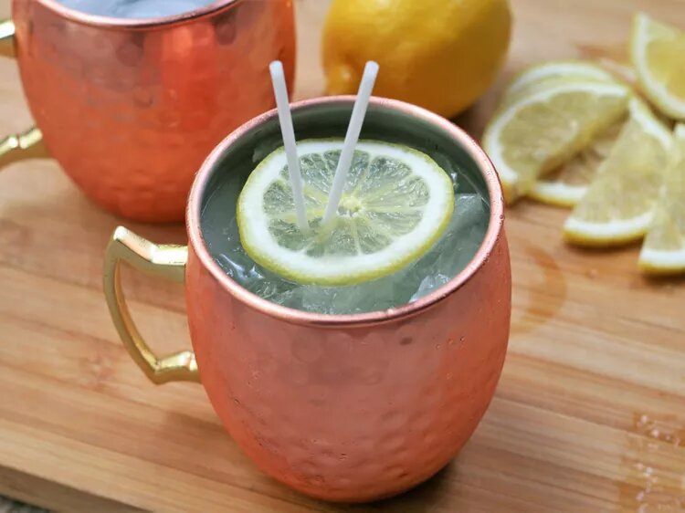

Limoncello Moscow Mule Recipe

Image source: https://www.allrecipes.com/recipe/8461558/limoncello-moscow-mule/
Description
Ingredients:
- 1 cup ice
- ½ fluid ounce fresh lime juice
- 1 ½ fluid ounces limoncello liqueur
- 1 ½ fluid ounces vodka
- 5 ounces ginger beer
- 1 thin lemon slice (optional)
Steps:
- Fill a copper mule mug with ice.
- Add lime juice, limoncello, and vodka
- Stir to combine
- Top with ginger beer
- Lightly stir again and garnish with lemon slice
Recipe source: https://www.allrecipes.com/recipe/8461558/limoncello-moscow-mule/